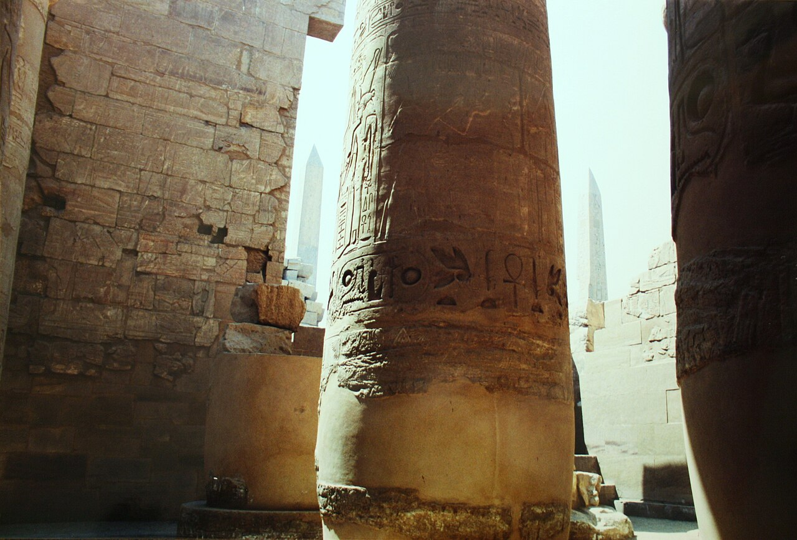
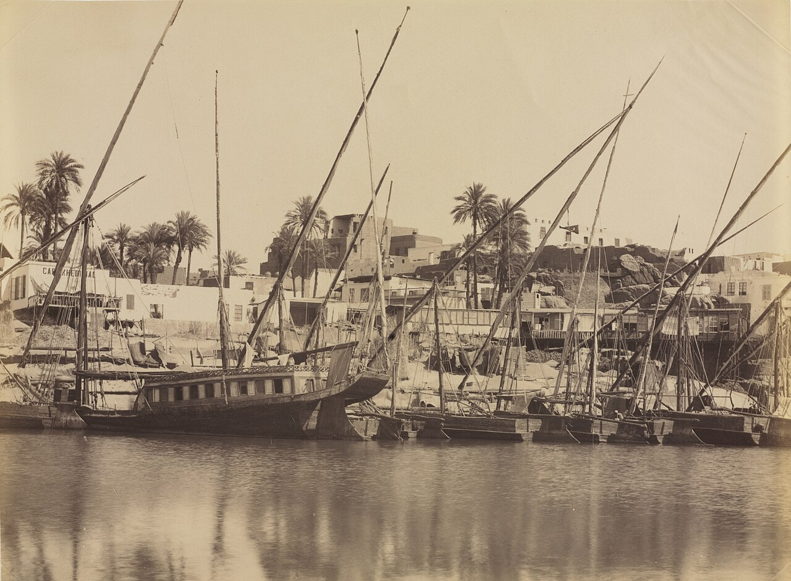
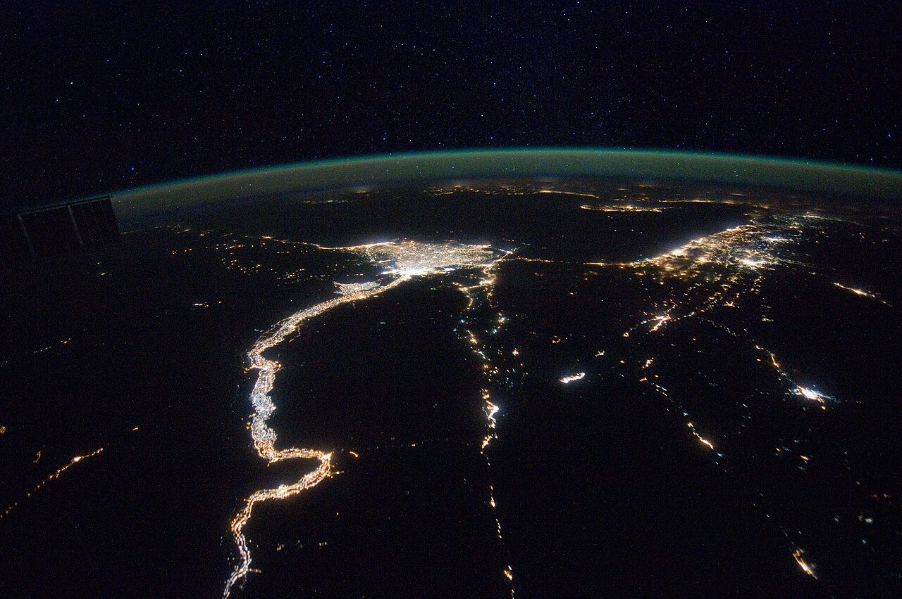
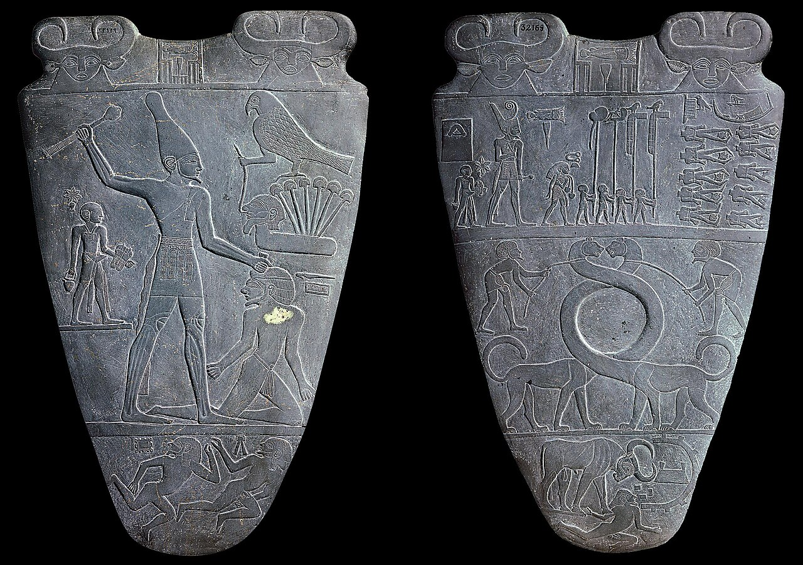
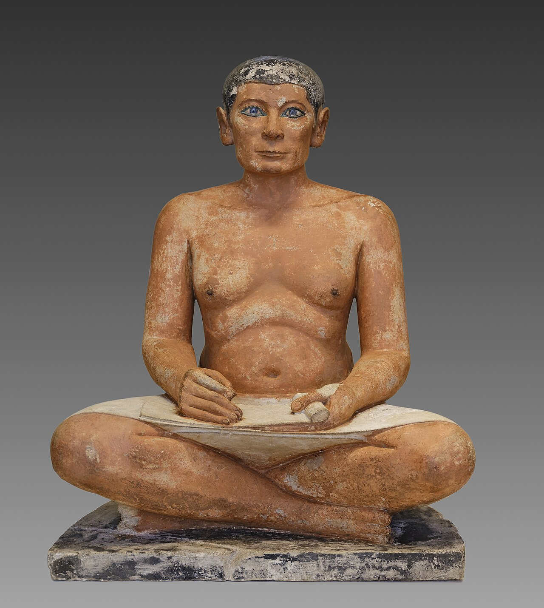
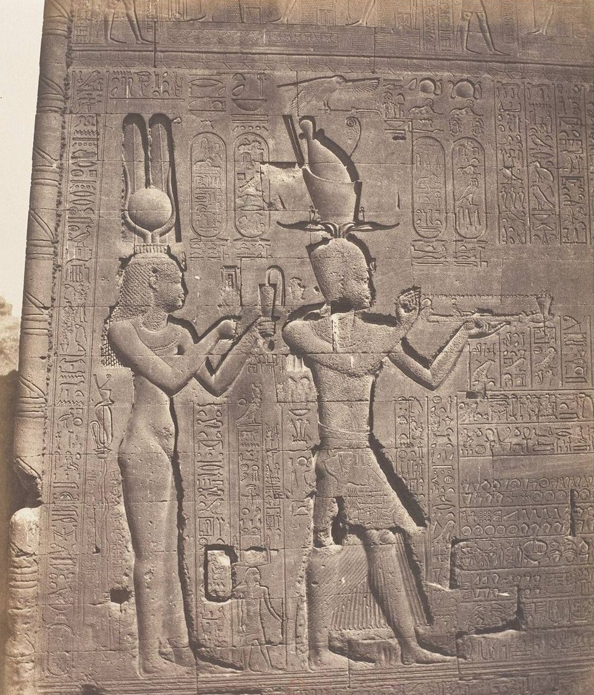
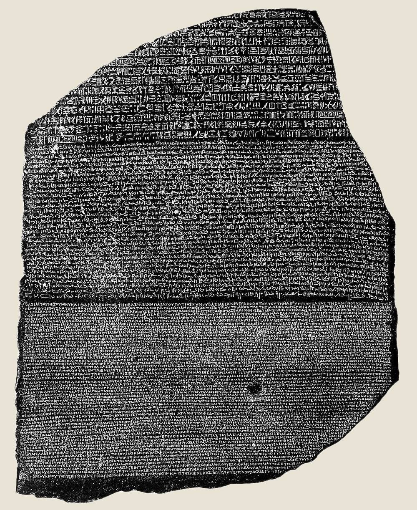

歴史・地理 History & Geographyエジプト文明は、 なぜ 3,000年も 続いた？ ピラミッドの時代からクレオパトラまで、古代エジプトの王の国はおよそ3,000年続きました。毎年同じころに来る洪水、砂漠の守り、神としての王、文字をあやつる書記たち。何度くずれても立ち直った3,000年を、年表の帯と地図でたどってみませんか。
2026.11.09 UP 約8分で読める 文：SOMOSOMO編集部
写真：Karnak Hypostyle Hall／Gary Todd（2002年、CC0）
Previously
前回は、メソポタミアのウルクで、川の水を畑に引く「灌漑」が余った食べ物を生み、都市と、帳簿から始まった楔形文字が生まれた話でした。ただ、メソポタミアの川の大水は収穫のころに来るうえ、量も年によって大きく変わりました。都市国家どうしは争いをくり返し、力を握る都市は次々に入れ替わりました。
エジプトの古い都メンフィス、前196年3月。各地の神官たちが集まり、戴冠したばかりの10代の王、プトレマイオス5世をたたえる決まりを定めました。王を神としてまつり、誕生日と即位の日を毎年祝う。その文章は石碑に刻まれて各地の神殿に置かれ、うち1枚がのちに、世界でいちばん有名な石の一つになります。
この王の先祖は、エジプト人ではありません。アレクサンドロス大王（前4世紀に、ギリシャからインダス川まで征服した王）に仕えた、ギリシャ系の将軍です。それでも神官たちは彼を「ファラオ（エジプトの王）」として扱い、3,000年近く使われてきた神聖な文字、ヒエログリフでも書き記しました。
最初の王が国をまとめたのは前3100年ごろ。最後の女王クレオパトラが亡くなったのは前30年です。そのあいだ、王が変わっても、外国人が王になっても、「エジプトの王の国」という形は保たれました 。支配者が次々に入れ替わったメソポタミアと、何が違ったのでしょうか。
In a word
読める川 と砂漠 に守られ、王が代わってもしくみ が引き継がれたから。
01
The Gift of the Nile
洪水は、 毎年ほぼ 同じころに やって来た
古代ギリシャの歴史家ヘロドトスは「エジプトはナイルの賜物（たまもの）」と書きました。エジプトにはほとんど雨が降りません。それでも畑が実ったのは、毎年ナイル川があふれて、畑を水びたしにしてくれたからです。
水のもとは、はるか南のエチオピアの高原に降る夏の大雨です。その水が北へ流れ下り、エジプトの南の端アスワンでは6月ごろから水かさが増え始めます。秋まで増え続けたあと、水はゆっくり引いていきました。
引いたあとの畑には、上流から運ばれた黒く肥えた泥が残ります。エジプト人は自分の国を「ケメト（黒い土地）」と呼びました。肥料をまかなくても、毎年、川が土を新しくしてくれたのです。
大事なのは、この洪水が毎年ほぼ同じ時期に来た ことです。夜明け前の東の空に明るい星シリウスがふたたび見えるころ、水が増え始める。エジプト人はこれを1年の始まりの目印にし、1か月30日×12か月に5日を足した、365日の暦をつくりました。
Fig.01 ナイルが 決めた、 エジプトの1年
シリウスが見える 夜明け前の空に星シリウスがふたたび昇る。新しい年の目印 アケト（増水） 川があふれて畑が水につかる。農作業ができないあいだ、人々は王の工事などに集められたともいわれる ペレト（芽生え） 水が引いて、黒い泥が残った畑に麦の種をまく シェムウ（収穫） 麦を刈り取る。収穫の一部を税として国に納める
Repeat
見どころは、季節の名前がすべて川の様子で決まっていること。シリウスは新年の合図で、季節は残りの3つ。4か月ずつで、年末に足した5日は神々の誕生を祝う祭りの日でした。うるう年がないので、暦は季節と少しずつずれました。
水の量は年によって違います。少なすぎれば不作になり、多すぎれば村や堤防がこわれます。そこで川べりに目盛りのついた階段や井戸のような施設「ナイロメーター」がつくられ、水位がはかられました。その年の洪水の具合で、納める税の量が決まったといいます。
いつ水が来て、どれくらい実るかが前もってわかる。だから国は、どれだけ税を取れるかを計算できました。先が読める川 が、長続きする国の土台になったのです。

南の玄関口、アスワン 1870年ごろ、アスワンのナイル川の岸を写した写真です。帆柱の高い船がずらりと並んでいます。アスワンは古代エジプトの南の端の町で、毎年の増水がまず届く場所でした。写真：View of Aswan - Along the Nile ／アントニオ・ベアト、クリーブランド美術館所蔵（1870年ごろ、CC0）
02
Walls of Sand
砂漠に 守られた、 細長い 一つの国
エジプトの地図を見ると、人が住めるのは川ぞいの細い緑の帯と、海の近くで川が扇のように広がる「デルタ」だけです。そのまわりは、エジプト人が「デシェレト（赤い土地）」と呼んだ砂漠でした。
この砂漠が、天然の城壁になりました。西はサハラ砂漠、東は紅海までの荒れ地。南のアスワンには岩だらけの急流があり、船で攻めのぼるのは簡単ではありません。北は海と、デルタの湿地です。四方が開けた平地で、隣の都市や外の民族とぶつかりやすかったメソポタミアとは、大きな違いでした。
Fig.02 川の帯と、 それを囲む 砂漠
アレクサンドリア
メンフィス
テーベ
アスワン
地中海
紅海
西の砂漠
（サハラ砂漠の東）
東の砂漠
シナイ
半島
ナイル川
（第1急流）
デルタ
下エジプト
上エジプト
見どころは、赤いナイル川と、人が住めた淡い色の帯（上エジプトの谷と下エジプトのデルタ）のまわりが、すべて砂漠だということ。外から大軍が入れる道は、北東のシナイ半島の側と、南の急流の先くらいでした。都市の位置はおおよそです。地図は Natural Earth のデータ（パブリックドメイン）をもとに作成。
川そのものは、国をつなぐ道になりました。ナイル川は南から北へ流れ、風はたいてい北から南へ吹きます。北へ行くときは流れに乗り、南へ行くときは帆を張ればよいのです。細長い国でも、命令や税の穀物を船ですばやく運べました。

夜の明かりが描く、ナイル川 2012年に国際宇宙ステーションから撮った夜のエジプトです。街の明かりが、ナイル川とデルタの形をなぞっています。いまも人の暮らしは、川のそばに集まっています。写真：ISS-30 Mediterranean Sea, Nile River Delta and Levante ／NASA（2012年、パブリックドメイン）
前3100年ごろ、この川ぞいの土地を一人の王がまとめたと伝えられます。南の細長い谷の「上エジプト」と、北のデルタの「下エジプト」。川上が「上」なので、南が上になります。以後の王も「上下エジプトの王」と名乗り、この二つを一つに保つことを務めとしました。

2つの冠をかぶった王 前3100年ごろのナルメル王のパレット（化粧用の石板）の表と裏です。左の面の王は上エジプトの白い冠、右の面の王は下エジプトの赤い冠をかぶっています。国がまとまったことを表すという見方があります。写真：Narmer Palette ／撮影者不明、エジプト考古学博物館所蔵（撮影年不明、パブリックドメイン）
それでも、砂漠は完全な壁ではありませんでした。北東のシナイ半島の側や南の川すじから、のちに外の王たちがやって来ることになります。
03
God-King and Scribes
神の王が 命じ、 書記が 国を 動かした
エジプトの王は、ただの支配者ではありませんでした。生きているあいだはハヤブサの姿の神ホルスの化身、つまり神そのものとされたのです。神殿の壁では、王が神々と向き合い、ささげ物をする姿がくり返し描かれました。
王の大切な仕事は「マアト」を守ることでした。マアトは、正しさ・真実・つり合いのとれた秩序を表す言葉です。太陽が毎朝昇り、川が毎年あふれるのも、世の中が正しく回るのもマアト。その反対の混乱を退け、世界の秩序を保つのが王の役目と考えられていました。
神の王が秩序を守るなら、国の豊かさは王のおかげ、ということになります。前2600年ごろの大ピラミッドは、その王の力を目に見える形にしたものでした。何万トンもの石と、何千もの人と食料を動かせる国だったのです（建て方は「ピラミッドは、どうやって建てられた？ 」で）。
ただ、王一人で国は回りません。実際に動かしたのは、文字を読み書きできる書記と役人でした。畑の広さを測り、収穫を数え、税を集め、工事の人と食料の配り方を記録する。彼らは記念碑用のヒエログリフのほかに、パピルス（植物でつくった紙）にすばやく書くくずし字も使いました。
読み書きできたのは、人口の一部（推計で1〜15％ほど）でした。書記の学校で使われた教科書には、ほかの仕事の苦労を並べて「書記がいちばん」とすすめる文章も残っています。役人の地位は親から子へ受け継がれることも多く 、王が代わっても、国を回すやり方は記録とともに引き継がれました。

約4,400年前の、書記の像 エジプトのサッカラで見つかった石灰岩の像で、ルーヴル美術館にあります。膝の上にパピルスを広げ、いまにも書き出しそうな姿です。目には水晶がはめこまれています。写真：Le Scribe accroupi ／Shonagon（2025年、CC0）
04
Falls and Returns
何度くずれても、 同じ形で 立ち上がった
とはいえ、3,000年ずっと平和だったわけではありません。いまの歴史家は、国がまとまって栄えた時代を「古王国」「中王国」「新王国」と呼び、そのあいだの国が分かれた時代を「中間期」と呼んでいます。
古王国はピラミッドの時代のあと、前2160年ごろにくずれました。王の力が弱まり、地方の有力者が力を持ったうえ、洪水の少ない年が続いたことも響いたという説があります。けれども約100年後、南のテーベの王がふたたび国をまとめ、中王国が始まりました。
Fig.03 3,000年の エジプト、 まとまった時と 分かれた時
前3000 前2000 前1000
前3100– 初期王朝 上下エジプトが一つにまとまる 前2686– 古王国 ピラミッドの時代 前2160– 第1中間期 地方の有力者が分かれて争う 前2055– 中王国 テーベの王が国をまとめ直す 前1650– 第2中間期 北はヒクソスが治め、南はテーベの王 前1550– 新王国 いちばん広い国になった時代 前1069– 第3中間期 王家が南北に分かれる 前747– クシュの王 南のクシュ（いまのスーダン北部）から来た王たち 前664– 末期王朝 エジプト人の王が一時もどる 前525– ペルシアの支配 前404〜前343年は、エジプト人の王が独立を取りもどした 前332– ギリシャ系の王 アレクサンドロス大王のあと、プトレマイオス朝が前30年まで
見どころは、赤い3つの王国のあいだに、斜線の「分かれた時代」がはさまっていること。黒は外から来た王（右端の白い線で、ペルシアとギリシャ系を区切る）、灰色はそれ以外のエジプト人の王の時代です。帯の長さは年数に比例します。
前1650年ごろには、西アジアから移り住んだ人々「ヒクソス」が北部の王になります。けれども彼らはファラオの称号を名乗り、エジプト人の書記や役人を使って国を治めました。約100年後、テーベの王アフメス1世がヒクソスを追い出し、新王国が始まります。
新王国も、前11世紀には王の力が弱まり、北の王と、南のテーベを治める神官たちとに国が分かれて終わります。
そのあとは外からの王が続きます。南のクシュ（いまのスーダン北部）の王、ペルシア（西アジアの大帝国）、そしてアレクサンドロス大王の将軍の子孫、プトレマイオス家。注目したいのは、その多くがエジプトのしくみを壊さず、自分がファラオの衣装を着る道を選んだ ことです。
クシュの王は古い神殿を直し、昔の様式をよみがえらせました。テーベのカルナック神殿でも、中王国からプトレマイオス朝まで、2,000年近く建て増しが続きます。冒頭の決まりも同じ流れの中にあります。ギリシャ系の王が、エジプトの神官たちの手で「神の王」として刻まれたのです。


ギリシャ系の王たちも、ファラオの姿で 左はデンデラのハトホル神殿の裏の壁にある、クレオパトラと息子カエサリオンの浮き彫りを1850年代に写した写真。二人は昔ながらのファラオの姿で、ささげ物を差し出しています。右は冒頭の決まりを刻んだ石の一つ、ロゼッタ・ストーンです。写真：Dendérah, Temple d'Athôr - Cléopatre et Cæsarion ／フェリックス・テナール、メトロポリタン美術館所蔵（1851〜1852年撮影、CC0）、The Rosetta Stone ／ドナルド・マクベス撮影（1922年、パブリックドメイン）
冒頭の決まりを刻んだ石の1枚が、ロゼッタ・ストーンです。同じ文がヒエログリフ、民衆文字（日常用のくずし字）、ギリシャ文字で並んでいたため、1799年に見つかると、1822年のヒエログリフ解読の手がかりになりました。
プトレマイオス家の最後の女王クレオパトラ7世は、一族で知られる限りただ一人、エジプトの言葉を学んだ王だったといわれます。前30年、ローマ（イタリアから地中海に広がった国）との戦いに敗れて彼女が亡くなると、エジプトはローマの一つの州になりました。3,000年続いた王の国は、ここで幕を下ろします。
ふり返ると、4つの理由は1本につながっています。先が読める川が税の計算を可能にし、砂漠が外の敵を遠ざけ、神の王が国をまとめ、書記が記録で国を回す。そして外から来た王たちも、このしくみを壊さずに使いました。だから王家が入れ替わっても、国の形は続いたのです。
05
By the Numbers
数字で見る 3,000年
30王朝 神官マネトが、エジプトの王たちを分けた王朝の数前3世紀の歴史書。いまも年代の目安に使われる
約 30人 カルナック神殿に手を加えた王の数中王国からプトレマイオス朝まで。外から来た王もふくむ
約 1,460365日の暦が、シリウスの昇る日とずれ、またもとの日にそろうまでの年数うるう年がないため、4年でほぼ1日ずれた
Here's the Fun Part
ここが面白い！エジプト人にとっても、 ピラミッドは 「大昔の遺跡」 だった
新王国の大王ラメセス2世の息子に、カエムワセトという王子がいました。前13世紀の人です。彼はメンフィスの近くで、古い王たちのピラミッドや墓を調べ、こわれた所を直し、持ち主の名前を刻み直しました。その仕事ぶりから、「最初のエジプト学者」 と呼ばれることもあります。
カエムワセトから見ても、大ピラミッドはすでに約1,300年前 の建物でした。いまの私たちから奈良時代をふり返るのと、ほぼ同じ遠さです。3,000年の中には、エジプト人自身が「大昔」を見上げ、守ろうとした時代までふくまれていたのです。
次に博物館でエジプトの展示を見たら、札の年代を見て、それが3,000年のうちの「いつ」なのか確かめてみてください。
To be continued
エジプトでもメソポタミアでも、文字は神殿や役所の記録として育ちました。ではそのころ、遠く東の黄河のほとりではどうだったのか。中国でいま知られている最も古いまとまった文字は、帳簿でも碑文でもなく、王が神や祖先にうかがいを立てた「占い」の記録に残っています。漢字は、占いから生まれたのでしょうか。
出典・参考
Ancient Egypt （Wikipedia 英語版）：初期王朝から古王国・中間期・中王国・新王国・末期王朝・プトレマイオス朝までの区分と年代、ヒクソスとアフメス1世、クシュの王ピイ、前525年のペルシアのカンビュセス2世による征服、前30年にローマの属州にFlooding of the Nile （Wikipedia 英語版）：エチオピア高原の雨、アスワンで6月はじめから水位が上がること、黒い泥とケメトの名、少なすぎる・多すぎる洪水の害、シリウスとの関係Egyptian calendar （Wikipedia 英語版）：30日×12か月＋5日の365日、年末の5日はオシリスなど神々の誕生日として祝われたこと、4か月ずつの3つの季節（アケト・ペレト・シェムウ）、シリウスが昇る日を新年の目安にしたこと、うるう年がなく4年で約1日ずれ、約1,460年でシリウスの昇る日がもとの新年にそろう周期Nile （Wikipedia 英語版）：流れが船を下流へ運び、北からの風が帆船の上りを助けたことNilometer （Wikipedia 英語版）：洪水の具合で税の水準が決まったこと、エレファンティネ（アスワン）が南の国境で増水が最初に観測された場所Egypt （Wikipedia 英語版）：ケメト（黒い土地）とデシェレト（赤い土地）Narmer Palette （Wikipedia 英語版）：前31世紀ごろ、上エジプトの白い冠と下エジプトの赤い冠、統一を表すという見方と儀式用とする見方Maat ・Pharaoh （Wikipedia 英語版）：マアト（真実・つり合い・秩序）とその反対のイスフェト、王はマアトを守る者、王はホルスの化身とされたこと、「上下エジプトの王」の称号Ancient Egyptian literature （Wikipedia 英語版）：読み書きが役人の条件だったこと、読み書きできた人は推計で人口の1〜15％、書記の地位をたたえる教訓文（職業の風刺）Scribe （Wikipedia 英語版）：書記が行政と経済の記録をつけたこと、地位を親から受け継ぐことがあったことSeated Scribe （Wikipedia 英語版）：サッカラで1850年に発見、第5王朝（前2450〜前2325年ごろ）の可能性が高い、彩色した石灰岩、水晶をはめこんだ目、ルーヴル美術館Egyptian hieroglyphs （Wikipedia 英語版）：記念碑用のヒエログリフと、くずし字（神官文字・民衆文字）Third Intermediate Period of Egypt （Wikipedia 英語版）：新王国の末に王の力が弱まり、北のタニスの王と、中・上エジプトを事実上治めたテーベのアメン大神官とに国が分かれたことHyksos （Wikipedia 英語版）：前1650〜前1550年ごろ、西アジア（レヴァント）から、ファラオの称号を名乗りエジプト人の書記や役人を使ったことTwenty-fifth Dynasty of Egypt （Wikipedia 英語版）：クシュの王が前8世紀にエジプトを支配し、伝統の復興者として古い神殿や様式をよみがえらせたことKarnak （Wikipedia 英語版）：中王国のセンウセレト1世の時代に建設が始まり、プトレマイオス朝まで続いたこと、約30人の王が関わったことAlexander the Great （Wikipedia 英語版）：前4世紀、ギリシャからインドの北西部（インダス川）まで征服したことRosetta Stone （Wikipedia 英語版）：前196年3月27日にメンフィスで神官たちが出した決まり、プトレマイオス5世、3種類の文字、1799年の発見、1822年のシャンポリオンの発表Ptolemy V Epiphanes （Wikipedia 英語版）：前210年生まれ、即位Cleopatra （Wikipedia 英語版）：プトレマイオス家でエジプトの言葉を学んだと知られるただ一人の王、前30年8月の死、エジプトがローマの属州にManetho （Wikipedia 英語版）：前3世紀のプトレマイオス朝の神官、王たちを30（または31）の王朝に分けたこと、いまも年代の骨組みとして使われることKhaemweset （Wikipedia 英語版）：前1281ごろ〜前1225年ごろ、ラメセス2世の息子、ウナス王のピラミッドなど古い王の墓や神殿を修復し、持ち主の名を記したこと、「最初のエジプト学者」と評されることGreat Pyramid of Giza （Wikipedia 英語版）：前2600年ごろ（前2560年ごろの完成とする見方）。カエムワセトの時代まで約1,300年年表（Fig.03）と本文の年代は、Ian Shaw 編 The Oxford History of Ancient Egypt （Oxford University Press、2000年）の区分による。資料により数十年ずれる
地図：Natural Earth （パブリックドメイン）の陸地と川のデータから作成
写真：すべて CC0 またはパブリックドメイン。クレジットはそれぞれの写真の下に記しています